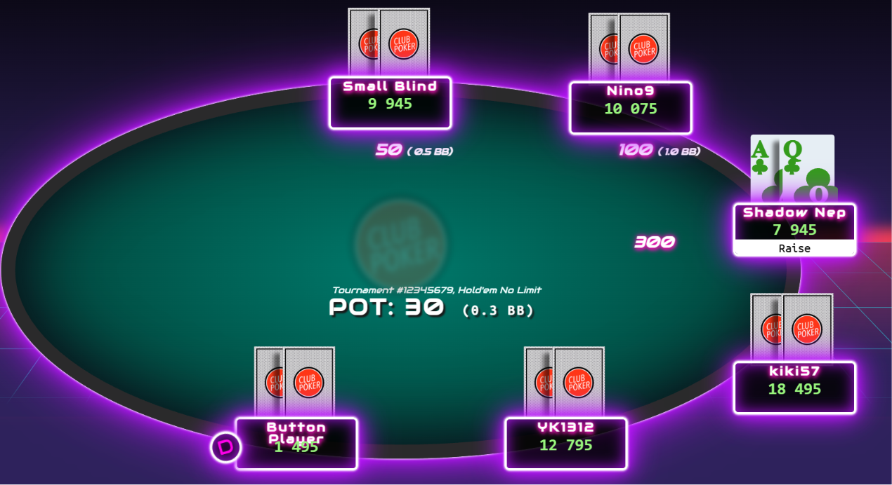
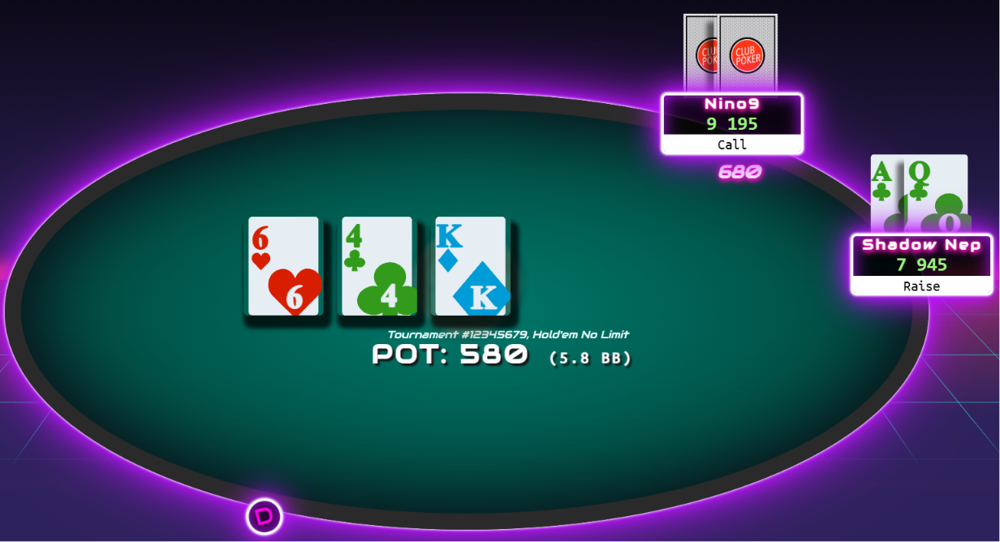
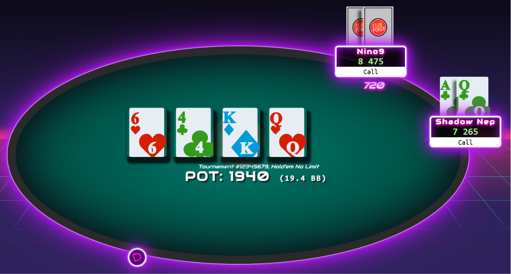
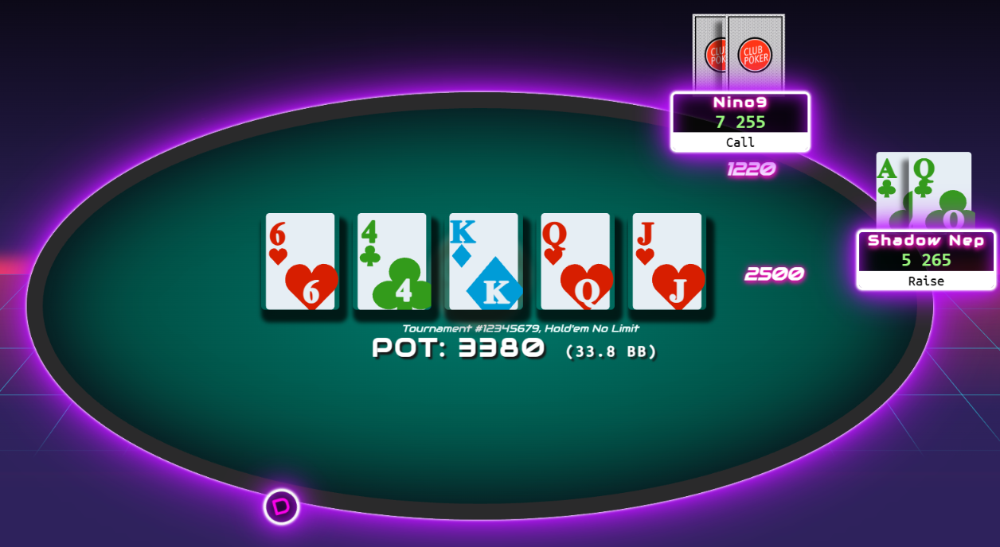

Chaque jour cette page sera actualisé avec de nouvelles mains jouées par nous.
Cette section a pour but de vous expliquer certaine de nos mains pour que vous puissiez vous en inspirer et ainsi progresser.
Aujourd'hui nous nous intérressons à une main joué par Jules en tournoi Robbery, le format sko avec une augmentation de la blinde en 7min de Betclic.
"Avant cette main, je jouais comme un "NIT" voir "TAG" j'ai donc profité de cette main pour bluffer mon adversaire."
J'ai décidé d'ouvrir large en relançant 3BB car je sais que mon adversaire en big blind est un joueur "curieux" qui va limp ou call casiment tout en préflop.
Etant donné que j'ai une bonne main à ce moment-là, je cherche à la rentabiliser.
Les autres joueurs vont fold et Nino va call ma relance 3BB pour défendre sa big blind.

Tombe au flop 6 de coeur, 4de trèfle et Roi de carreau.
On a donc un board très déconnecté, très sec. Il y a quand même un trèfle pour aller chercher un flush backdoor.
Mais le majeur problème est ce roi qui rend ma dame "inutile" car même si je touche une dame, je n'aurai pas top pair. MAis cela m'ouvre une quinte backdoor.
Mon adversaire décide de raise 6.8BB, il y a donc environ 13BB dans le pot. Il me faut donc environ 30% pour pouvoir call.
Entre la paire d'as à 12% et la quinte et flush backdoor, cela me donne environ 22% de chance de gagner.
Or comme mon adversaire est un joueur curieux, il se peut qu'il ait touché le 6 ou le 4
Je décide donc de call en ayant en tête que je veux le bluff, mais aussi rentabiliser ma main. C'est pourquoi je call et ne raise pas.

Tombe à la turn une dame de coeur.
Je suis assez content, car je me protège des bluffs avec pair de 4 et pair de 6.
Mon adversaire relance 7.2BB.
Ce petit sizing me donne deux possibilités. Il a peur de cette dame et n'ose pas miser beaucoup, mais j'élimine cette option, car je considère mon adversaire comme un bon joueur au vu des précédentes mains.
Deuxième possibilité, il veut rentabiliser ce roi et donc mise petit pour que je call.
Je décide donc de call en ayant en tête que je veux le bluff sur la river. Je ne le bluff pas maintenant avec un raise car c'est un joueur curieux et risque de call pour aller voir la river.

Tombe à la river un valet de coeur.
Je suis très content de cette carte, car je vais pouvoir continuer mon bluff avec cette ouverture flush, quinte et quinte royale.
Mon adversaire décide de miser encore très petit, 1/3pot, 12.2BB.
Je décide donc de semi-bluff en raisant double : 25BB.
Semi-bluff, car je gagne les paires de 4 et de 6, mais bluff la pair de roi avec ce tirage couleur et quinte.
Résultat : il fold et je récupère le pot à 71BB après mon raise 25BB. Me plaçant à la 18ème place du tournoi sur les 130 personnes restantes.
Je finirai à la 3ème place du tournoi.
